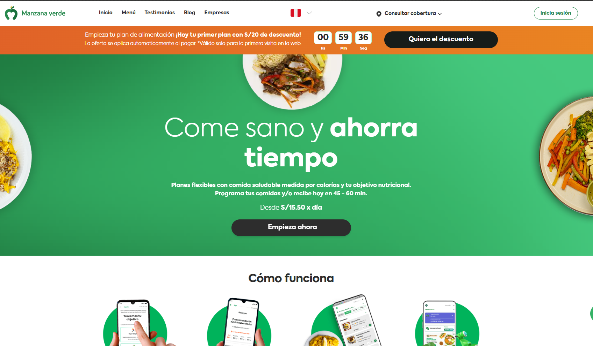

Manzana Verde – Plataforma Integral de Alimentación Saludable
Contexto
Manzana Verde es una plataforma líder en el sector de alimentación saludable en Latinoamérica. Durante 2023, la empresa buscaba migrar y consolidar su ecosistema digital en una única plataforma altamente escalable para manejar suscripciones, planes nutricionales, seguimiento de objetivos, pagos y logística de entrega.
El sistema previo tenía múltiples servicios aislados, problemas de rendimiento y duplicidad de flujos. Además, la empresa necesitaba mejorar su experiencia móvil, optimizar conversiones y tener trazabilidad completa del comportamiento del usuario para estrategias de marketing y personalización.
Solución Implementada
Se desarrolló la plataforma completa desde cero utilizando Nuxt.js y Vue 3, integrada con servicios de analítica, logística, nutrición y pasarelas de pago. La solución buscó centralizar operaciones, mejorar la experiencia del usuario y optimizar el rendimiento en dispositivos móviles.
Principales funcionalidades entregadas:
- Implementación de un Frontend SSR con Nuxt.js para mejorar SEO y tiempos de carga.
- Gestión completa de suscripciones y planes nutricionales personalizados.
- Sistema de checkout optimizado con integración a pagos locales e internacionales.
- Mapa interactivo para selección de zonas de entrega usando Google Maps API.
- Gestión de usuarios con inicio de sesión mediante Google Sign-in.
- Panel nutricional con información diaria personalizada.
- Dashboards internos basados en Pinia + consultas optimizadas.
- Integración total con CDP Segment para atribución y remarketing.
- Implementación de componentes UI con Tailwind CSS + animaciones con Goober.
- Optimización de métricas Core Web Vitals y prioridad de recursos (Priority Hints).
Tecnologías Utilizadas
- Nuxt.js + Vue.js (SSR & SSG)
- Pinia (gestión de estado)
- Tailwind CSS + Goober + lit-html / lit-element
- Google Analytics, Google Tag Manager, Segment
- Google Ads y Pixel de conversiones
- Google Maps API
- Google Sign-in
- API interna de logística y planes nutricionales
Resultados Clave
El proyecto permitió una escalabilidad significativa y mejoras directas en el negocio:
- Aumento del 40% en conversiones gracias a mejoras en UX y rendimiento.
- Reducción del tiempo de carga en móviles en un 55%.
- Sistema de suscripciones centralizado con menor fricción.
- Implementación de análisis avanzado con Segment para personalización.
- Experiencia de usuario más fluida con Nuxt SSR + Tailwind.
- Incremento del engagement en el panel nutricional.
Mockups del Proyecto
A continuación, una muestra visual de la plataforma implementada.